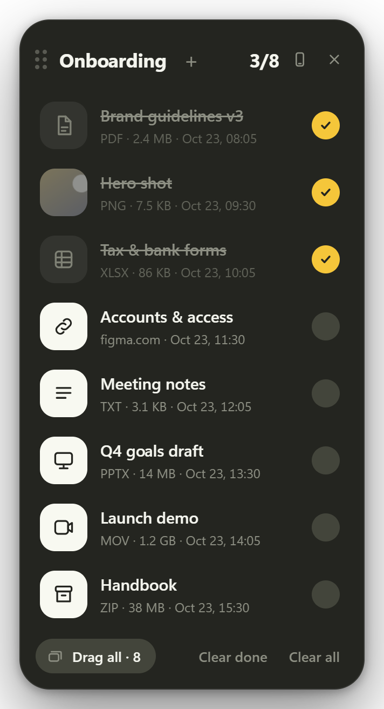
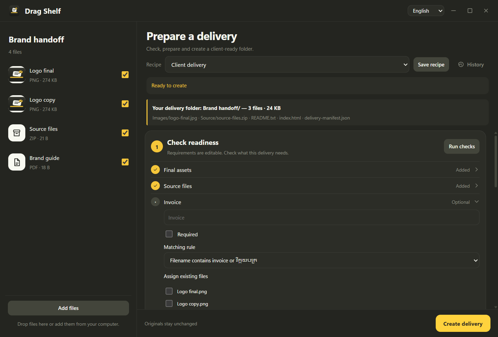

↔
Drag. Shake. There it is.
Start dragging a file and shake your mouse, or use a keyboard shortcut. Your shelf appears when you need it.
A small tool for the work in between.
Files here. Links there. One more thing to send.
Bring it all together, then keep moving.
Free & open source · Windows + macOS · No account

LESS FRICTION. MORE FLOW.
Your desktop is a workspace.
Give the things in transit a place to land.
Start dragging a file and shake your mouse, or use a keyboard shortcut. Your shelf appears when you need it.
Collect files, folders, images, links and notes. Create separate shelves for separate trains of thought.
Drag one item or everything into the next app. Tick things off as you go. Enjoy a little less back-and-forth.
WHEN “SEND IT” NEEDS A LITTLE MORE.
Turn a shelf into a finished handoff. Check what’s missing, prepare new copies and see exactly what you’re about to deliver.
Meet your delivery workspace ↗The delivery workspace · real app screenshot

Editable requirements, duplicate checks and file size limits. Your checklist, your call.
Consistent names. PNG and JPEG resizing or conversion. Your originals stay unchanged.
Export a folder or ZIP with instructions, a visual index and a file manifest. Save the recipe for next time.
SMALL DETAILS. DAILY DIFFERENCE.
Scan a QR code and send photos over your local Wi-Fi. No email to yourself required.
Light or dark. Eight accents. Adjustable shortcuts. Compact shelves that work across screen sizes.
Switch languages in the app. Khmer fonts are bundled for offline use, with localized menus and numbers.
No account or analytics. Files stay on your computer. Optional phone transfers use your local network; optional update checks contact GitHub.
ONE LESS THING TO JUGGLE.
Free to download. Yours to make part of the day.
Choose your platform to get the latest release.
Yes. Drag Shelf is free and open source under the MIT license. Browse the source, report issues or contribute on GitHub.
Ordinary filesystem files are referenced in place. Browser images and text are saved locally. The delivery workspace creates new output copies and preserves the originals.
On Windows, run the installer or choose the portable executable. On Mac, open the DMG and drag Drag Shelf to Applications. Current releases are not developer-signed, so your operating system may show a security prompt. See the installation guide. macOS drag detection also needs Accessibility permission.
Starting with version 1.4, Drag Shelf checks for releases and offers a matching download. You can check manually or turn automatic checks off in the tray/menu-bar menu. Earlier versions need one manual upgrade first.
Visit GitHub Issues to report a problem or suggest an improvement. Include your operating system and app version to help reproduce a problem.